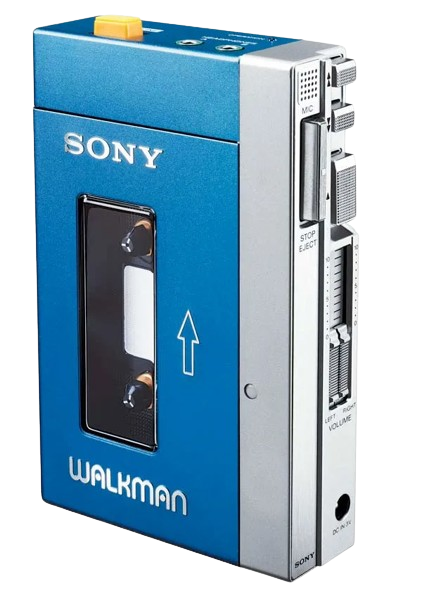

The Sony Walkman (TPS-L2)
The Sony Walkman TRS L2 is a legendary portable audio device that has stood the test of time. Here are some reasons why it remains a great product:
- Revolutionary Innovation: Introduced in the late '70s, the TRS L2 revolutionized the way people experienced music by making it truly portable. It played a pivotal role in the evolution of personal audio devices.
- Exceptional Build Quality: Crafted with precision and durability in mind, the Walkman TRS L2 boasts a robust construction that ensures longevity. Its iconic design has become synonymous with reliability.
- High-Fidelity Sound: Despite its vintage appeal, the TRS L2 delivers impressive audio quality. The rich and clear sound it produces provides an authentic listening experience, appreciated by audiophiles and casual music lovers alike.
- User-Friendly Interface: The straightforward and intuitive controls of the TRS L2 make it easy for users to navigate through their music library. Its simplicity enhances the overall user experience.
- Compact and Portable: The compact design of the Walkman TRS L2, coupled with its lightweight build, makes it an ideal companion for individuals on the go. Slip it into your pocket and enjoy music wherever you are.
- Cultural Icon: Beyond its functionality, the TRS L2 holds cultural significance as an icon of the '80s. Owning a Walkman is not just about enjoying music but also about owning a piece of history and nostalgia.
Embrace the legacy of the Sony Walkman TRS L2 and immerse yourself in a timeless audio experience.